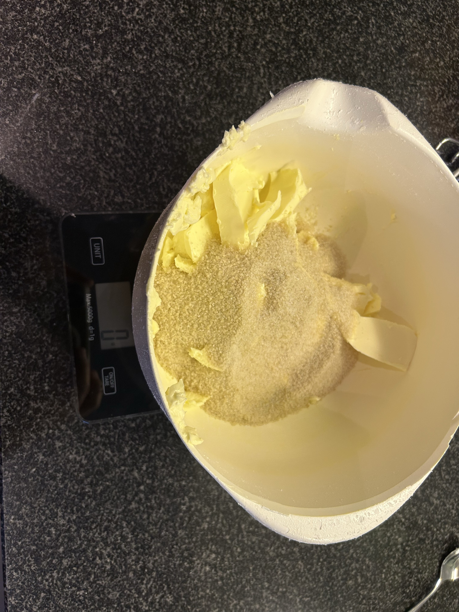
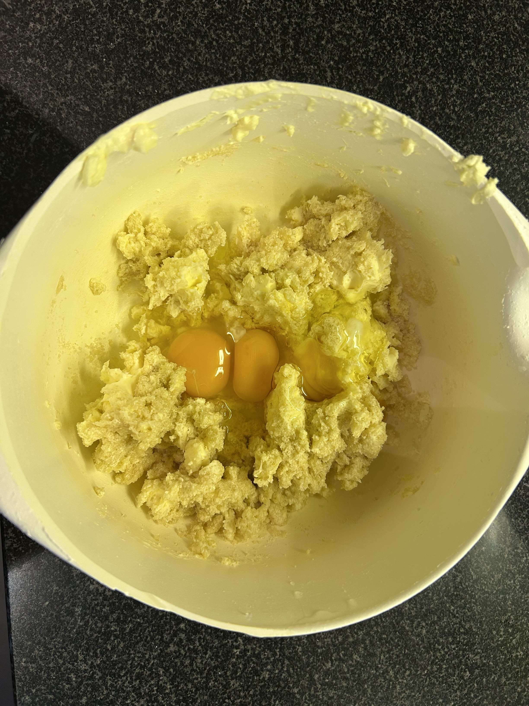
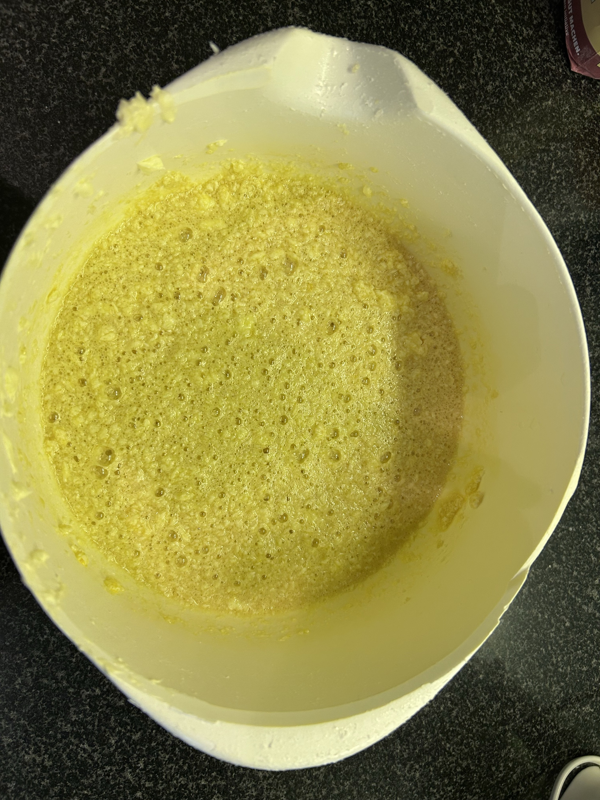
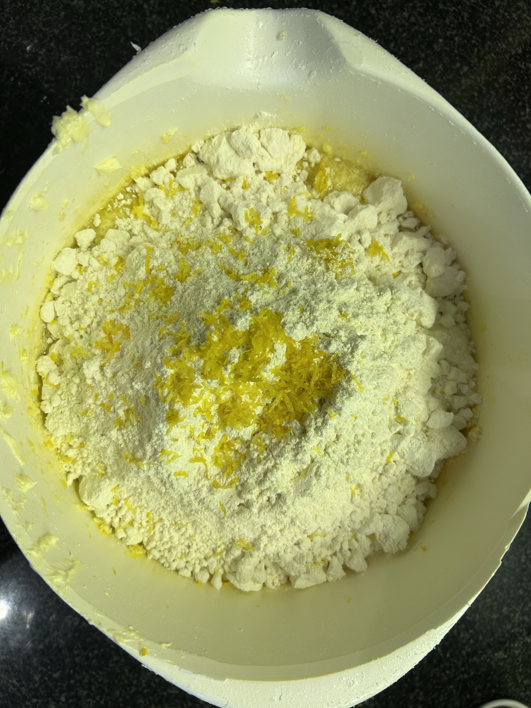
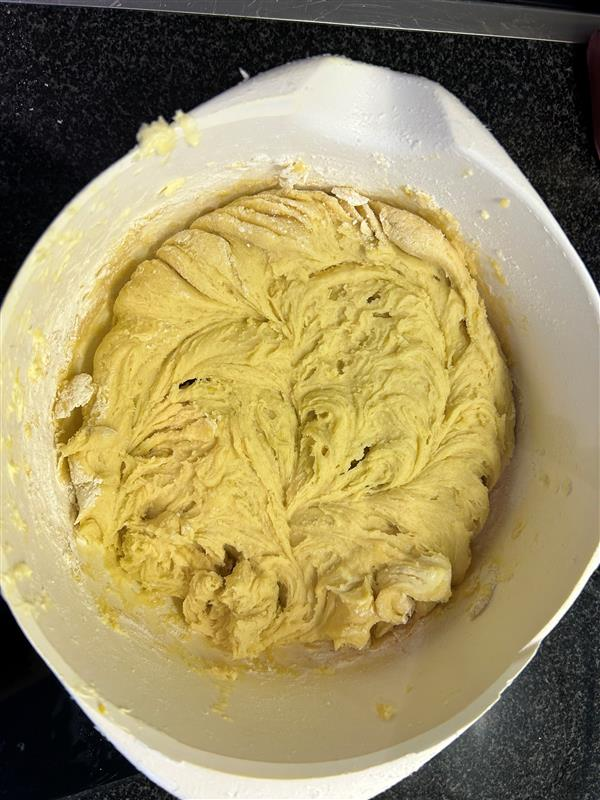
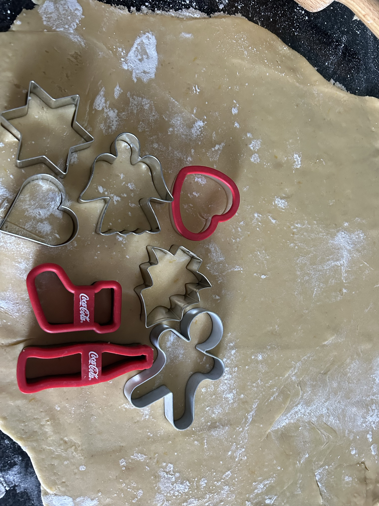
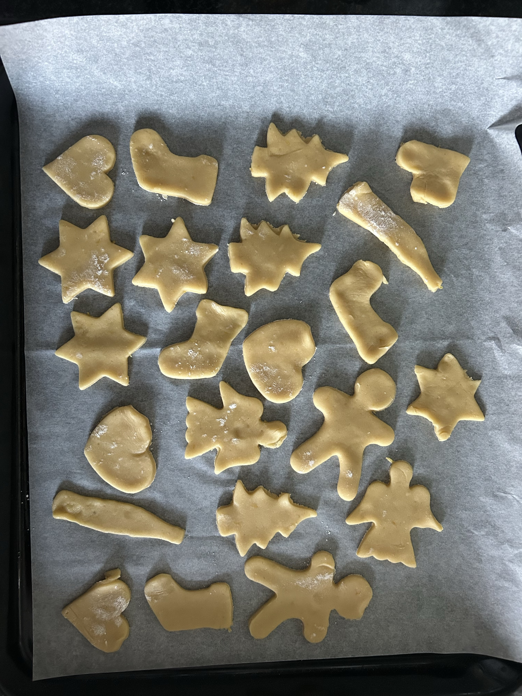
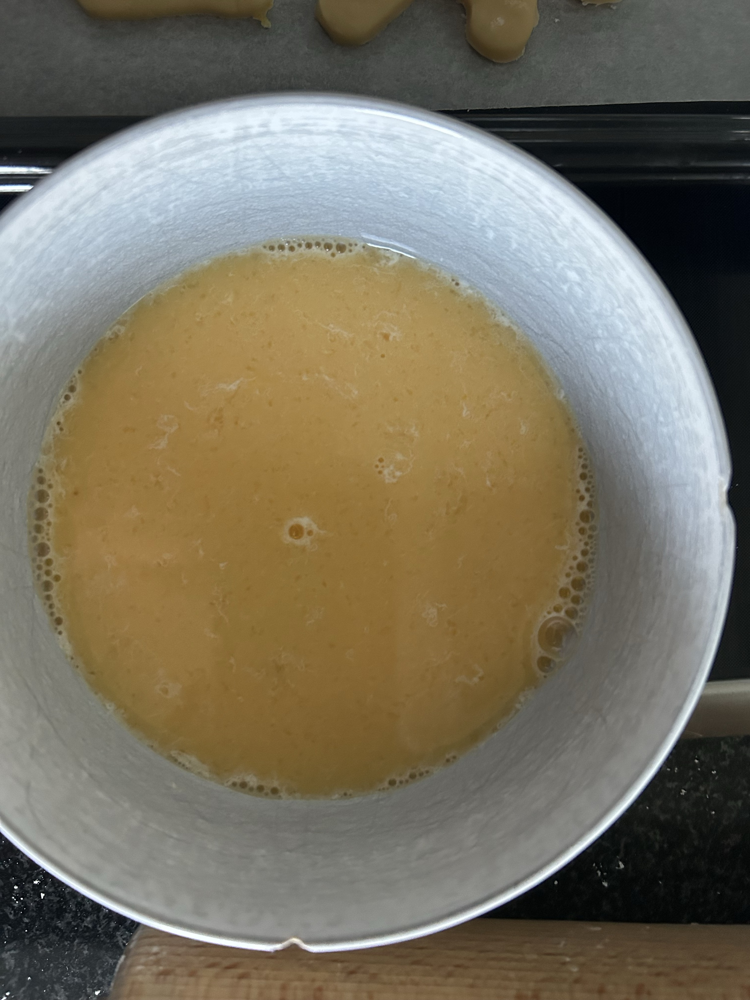
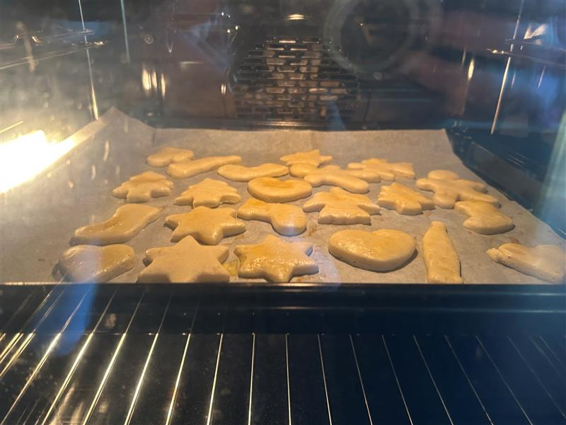
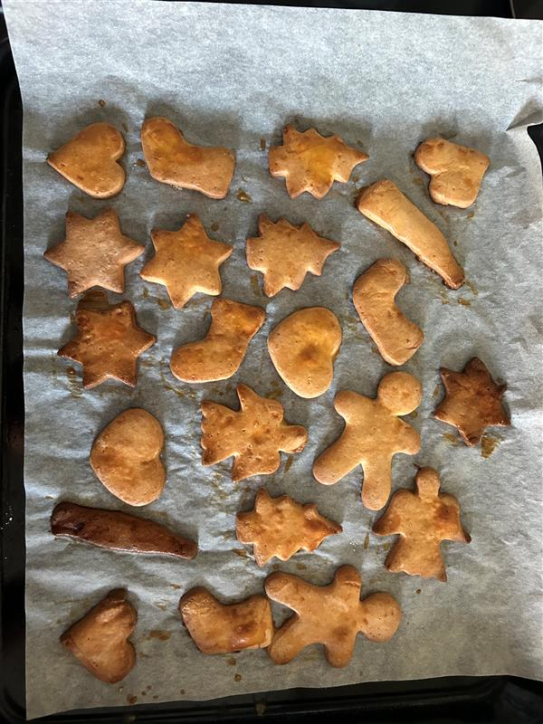

Step 1:
Place the butter, salt, and sugar in a bowl and mix everything together.
Step 2:
Add 3 raw eggs.
Step 3:
Continue mixing until the mixture becomes lighter in color.
Step 4:
Add the lemon peel and flour. then mix until the dough forms a whole. Chill for at least 2 hours.
Step 5:
At the end of this section mix it until the dough forms a whole and let it chill for at least 2 hours.
Step 1:
Take the dough out of the fridge 15 minutes before rolling it out.
Step 2:
Roll the dough on a lightly floured surface and cut into shapes of your choice.
Step 3:
Cool down again the shaped cookies for another 15 minutes.
Step 1:
Mix 2 raw eggs with water.
Step 2:
Coat the cookies with the egg mixture. Use a fork to draw fine patterns if desired.
Step 1:
Bake the cookies in the middle of a preheated oven at 200 °C (top and bottom heat) for 10 minutes.
Step 2:
When the cookies are golden yellow, cool them on a wire rack.
Klicke auf den Button unten, um ein PDF des Rezepts herunterzuladen:
Download RecipeOwner: Len Grunder
Email: len.grunder@edu.tbz.ch
The information provided on this page is for general informational purposes only. The owner assumes no responsibility for errors or omissions in the content of this site.
All content on this page, unless otherwise stated, is copyrighted by Len Grunder. Unauthorized use or reproduction is prohibited.
This recipe is based on content from fooby.ch.